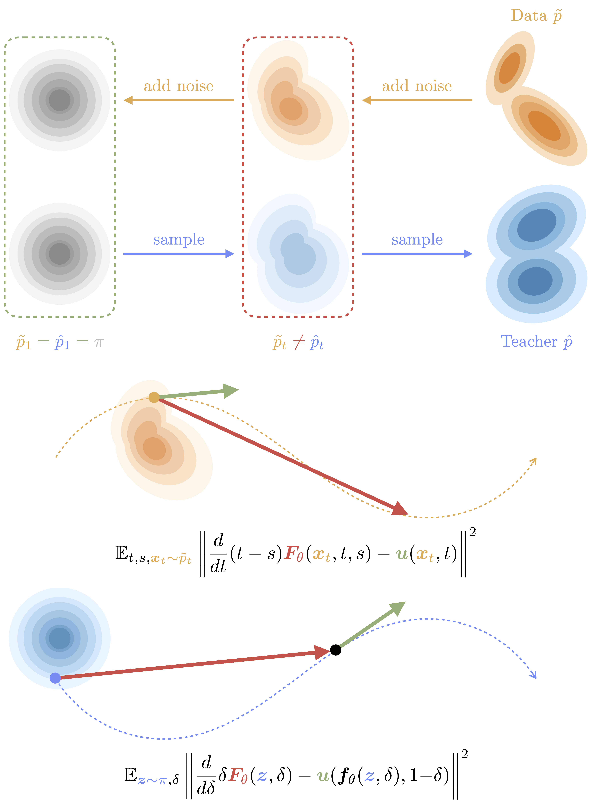
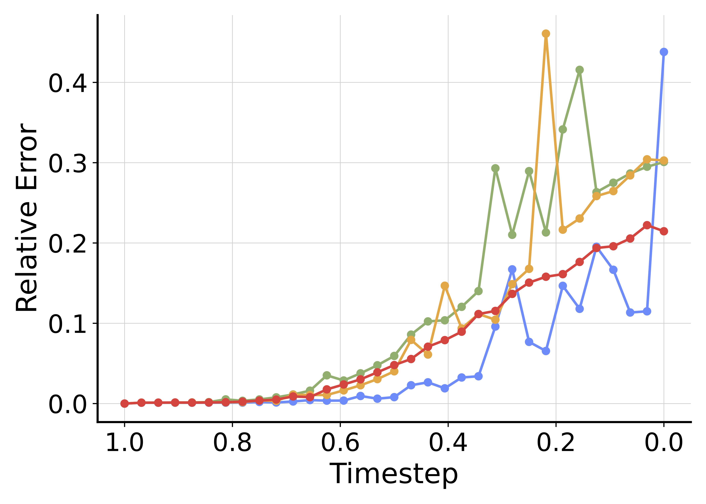
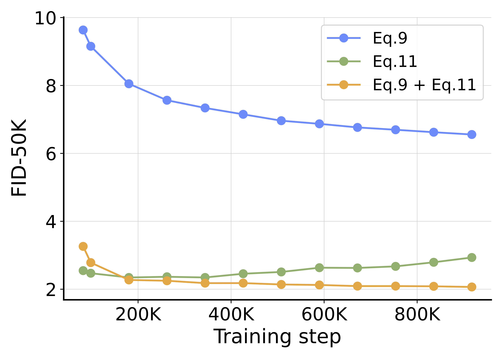
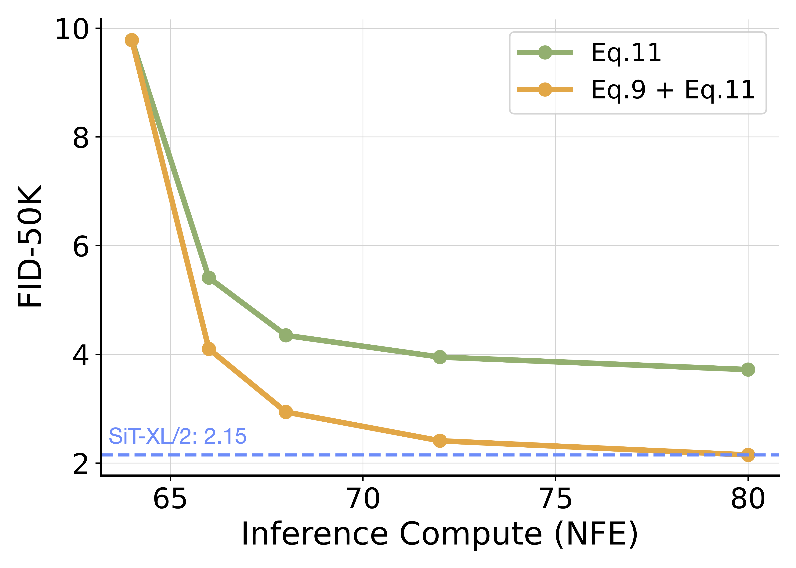

State-of-the-art flow models achieve remarkable quality but require slow, iterative sampling. While flow maps can accelerate this by distilling teacher models, current methods rely on external datasets, which introduces a risk we term Teacher-Data Mismatch: the static dataset may not align with the teacher's actual generative capabilities.
We propose FreeFlow, a principled framework that eliminates this dependency entirely. By sampling only from the prior distribution—the one place where teacher and student are guaranteed to align—we circumvent the mismatch risk by construction. Our approach achieves FID of 1.45 on ImageNet-256 and 1.49 on ImageNet-512 with only 1 step, establishing a new state-of-the-art without relying on and potentially misguided by any data.
The Risk of Teacher-Data Mismatch
The goal of flow map distillation is to create an efficient student that faithfully reproduces the full generative process of the given teacher. Existing methods typically achieve this by learning the teacher's dynamics at a series of intermediate states $\vx_t$. This leads us to a critical, often unasked question: where should these states come from?
Conventionally, they are drawn from a data-noising distribution $\tilde{p}_t$—samples created simply by adding noise to a static dataset. This practice rests on the tacit assumption that the external dataset represents a faithful proxy for the teacher's capabilities. We argue that this assumption is flawed. The teacher follows a distinct teacher-generating distribution $\hat{p}_t$, defined by its own unique solution paths.

The problem, which we term Teacher-Data Mismatch, is that these two distributions are not equivalent: $\tilde{p}_t \neq \hat{p}_t$. This discrepancy is not merely a theoretical curiosity; it manifests in several common and critical scenarios:
- Generalization & Guidance: When a teacher generalizes beyond its training set or simply employs Classifier-Free Guidance (CFG), its generative distribution $\hat{p}_0$ contains extrapolated samples not present in the original data $p$.
- Post-Hoc Fine-Tuning: If a teacher is fine-tuned, its generating flow is deliberately modified, forcing $\hat{p}_t$ to diverge from the original data-noising paths.
- Unavailable Data: In many cases, the teacher's massive proprietary training data is simply unavailable, and any proxy dataset used will almost certainly create a severe mismatch.
In these scenarios, forcing a student to match the teacher on misaligned intermediate distributions fundamentally constrains its potential. To validate this, we conducted a controlled experiment introducing deliberate misalignment via data augmentation.
The Cost of Mismatch. We trained multiple students to distill a fixed teacher while applying increasing levels of augmentation to the distillation dataset. As shown in the right figure, stronger augmentation corresponds to a larger discrepancy between the teacher and the data.
The result is a significant degradation in student performance. This confirms that the quality of the learned flow map is highly sensitive to the representativeness of the data. Simply put, if the data is "wrong" for the teacher, the student fails.

This leads us to the core insight of our work.
-
While $\hat{p}_t$ and $\tilde{p}_t$ diverge for $t < 1$, they are identical at $t=1$ by construction. Both the teacher's generating and the data's noising processes collide with the Prior Distribution ($\pi$). The prior is the single distribution guaranteed to be on-distribution for the teacher. By sampling purely from $\pi$, we can circumvent the mismatch risk entirely.
FreeFlow: Predict & Correct
We operationalize this data-free philosophy into a principled framework. Concretely, we treat distillation as a dynamic trajectory matching problem starting solely from the prior.
Predict With Generating Flows
We parameterize the student flow map $\vf_\theta$ using the average velocity $\vF_\theta$, such that $\vf_\theta(\vz, \delta) = \vz + \delta \vF_\theta(\vz, \delta)$, where $\delta$ is the integration duration starting from the prior $\vz$.
At optimality, the student's displacement must match the integral of the teacher's velocity field $\vu$ along the trajectory: $$ \delta \vF_{\theta^*}(\vz,\delta) = \int_1^{1-\delta} -\vu(\vx(\tau),\tau) \dtau $$ By differentiating this condition with respect to $\delta$, we derive a local consistency identity that implies optimality: $$ \vF_{\theta^*}(\vz,\delta) + \delta\partial_\delta\vF_{\theta^*}(\vz,\delta) = \vu\left(\vf_{\theta^*}(\vz,\delta),1-\delta\right) $$
This identity motivates our prediction objective: $$ \mathbb{E}_{\vz,\delta}\Bigg\|\, \vF_\theta(\vz,\delta) + \sg\Big( \delta\partial_\delta \vF_{\theta}(\vz,\delta) - \vu\left(\vf_{\theta}(\vz,\delta),1-\delta\right)\Big) \,\Bigg\|^2 $$
Crucially, we observe that this objective effectively optimizes for the alignment between two velocities. The term $\vF_\theta + \delta\partial_\delta\vF_\theta$ is exactly the student's generating velocity, $\partial_\delta \vf_\theta$, which we denote as $\vvG$. Intuitively, $\vvG$ represents the rate at which the student traverses its own path. In practice, it can be computed efficiently via Jacobian-vector product (JVP) or approximated using finite differences in a discrete-time setting.
Consequently, the optimization reduces to minimizing the difference between the student's generating velocity and the teacher's instantaneous velocity, leading to the following gradient:
$$ \nabla_{\theta} \mathbb{E}_{\vz, \delta} \left[ \vF_{\theta}(\vz,\delta)^\top \sg\bigg( \underbrace{\vvG(\vf_{\theta}(\vz,\delta), 1-\delta)}_{\text{Student Gen. Vel.}} - \underbrace{\vu(\vf_{\theta}(\vz,\delta), 1-\delta)}_{\text{Teacher Vel.}} \bigg) \right] $$Remarkably, we verify that this entire formulation relies solely on sampling from the prior $\pi$, without any reliance on an external dataset $\tilde{p}$, thus completely circumventing the risks of Teacher-Data Mismatch.
The Challenge of Error Accumulation
The student functions effectively as an autonomous ODE solver. However, as a learned model, it remains an approximation subject to inherent inaccuracies. Crucially, these approximation errors are not isolated; they compound as the integration proceeds from noise ($\delta=0$) to data ($\delta=1$). In the right figure, we measure the relative differences between the student's predicted trajectory and the teacher's true sampling path, which empirically quantifies and confirms such a phenomenon as the student progressively diverges from the teacher when $\delta$ increases.

Correct With Noising Flows
The fundamental issue with the prediction objective is that the student has no means to correct its own deviations. Once it drifts off the teacher's path, the local velocity target $\vu$ at the erroneous state may not guide it back.
To mitigate this drift, we introduce a correction mechanism rooted in distribution matching. While we draw inspiration from Variational Score Distillation (VSD), we go beyond a simple adaptation. Utilizing the correspondence between score functions and velocity fields, we identify that the optimality of the student is equivalent to the alignment between the model's noising velocity $\vvN$ and the underlying velocity $\vu$. We illustrate the high-level understanding of this mechanism in the right figure.

This alignment goal directly motivates our correction gradient. Crucially, just like our prediction objective, this formulation relies solely on sampling from the prior $\pi$, ensuring the entire distillation process remains protected from Teacher-Data Mismatch.
$$ \nabla_{\theta} \mathbb{E}_{\vz,\vn,r} \left[ \vF_{\theta}(\vz,1)^\top \sg\bigg( \underbrace{\vvN(\vI_r(\vf_{\theta}(\vz,1), \vn), r)}_{\text{Student Noising Vel.}} - \underbrace{\vu\bigl(\vI_r(\vf_{\theta}(\vz,1), \vn), r\bigr)}_{\text{Teacher Vel.}} \bigg) \right] $$(In practice, since the student's marginal velocity $\vvN$ is analytically intractable, we approximate it using a lightweight auxiliary network $g_\psi$ trained online.)
This velocity alignment perspective offers a series of new understandings. By linking the velocity fields directly to the evolution of probability density, we gain the essential reasoning behind the practical design choices of our algorithm, such as the specific sampling distribution across noise levels (see Section 5.1 in the paper).
The Synergy
While theory suggests that either learning the flow trajectories (Prediction) or matching the marginal distributions (Correction) could suffice for generation, we find that neither is robust in isolation.
As illustrated in the right figure, the prediction objective (Blue), when used alone, falls victim to error accumulation and plateaus at suboptimal fidelity. Conversely, training only with the correction objective (Green) suffers from mode collapse and gradual degradation. With a combination of the two objectives (Orange), we achieve a performance strictly superior to either independent component. The prediction signals construct the generative path, while the correction signals act as a stabilizer to rectify compounding errors, ensuring consistent improvement throughout training. This synergy is crucial for achieving high-quality generation.

Experimental Results
We validate our proposal on ImageNet class-conditional generation. Despite using zero data samples during training, our method establishes a new state-of-the-art, significantly outperforming baselines that rely on the full ImageNet dataset.
ImageNet 256×256
| Method | Epochs | #Params | NFE ↓ | FID ↓ |
|---|---|---|---|---|
| Teacher Diffusion / Flow Models | ||||
| SiT-XL/2 | 1400 | 675M | 250×2 | 2.06 |
| SiT-XL/2+REPA | 800 | 675M | 434 | 1.37 |
| Fast Flow from scratch | ||||
| Shortcut-XL/2 | 250 | 675M | 1 | 10.60 |
| 128 | 3.80 | |||
| IMM-XL/2 | 3840 | 675M | 1×2 | 7.77 |
| 8×2 | 1.99 | |||
| STEI | 1420\(^{\dagger}\) | 675M | 1 | 7.12 |
| 8 | 1.96 | |||
| MeanFlow-XL/2 | 240 | 676M | 1 | 3.43 |
| 1000 | 2 | 2.20 | ||
| DMF-XL/2 | 880\(^{\dagger}\) | 675M | 1 | 2.16 |
| 4 | 1.51 | |||
| Fast Flow by Distillation (Teacher: SiT-XL/2, FID=2.06) | ||||
| SDEI | 20 | 675M | 8 | 2.46 |
| FACM | - | 675M | 2 | 2.07 |
| FreeFlow-XL/2 (Ours) | 20 | 678M | 1 | 2.24 |
| 300 | 1.69 | |||
| Fast Flow by Distillation (Teacher: SiT-XL/2+REPA, FID=1.37) | ||||
| FACM | - | 675M | 2 | 1.52 |
| π-Flow | 448 | 675M | 1 | 2.85 |
| 2 | 1.97 | |||
| FreeFlow-XL/2 (Ours) | 20 | 678M | 1 | 1.84 |
| 300 | 1.45 | |||
ImageNet 512×512
| Method | Epochs | #Params | NFE ↓ | FID ↓ |
|---|---|---|---|---|
| Teacher Diffusion / Flow Models | ||||
| SiT-XL/2 | 600 | 675M | 250×2 | 2.62 |
| SiT-XL/2+REPA | 400 | 675M | 460 | 1.37 |
| EDM2-S\(^{*}\) | 1678 | 280M | 63×2 | 1.34 |
| EDM2-XXL | 734 | 1.5B | 82 | 1.40 |
| EDM2-XXL\(^{*}\) | 63×2 | 1.25 | ||
| Fast Flow from scratch | ||||
| sCT-XXL | 761\(^{\dagger}\) | 1.5B | 1 | 4.29 |
| 2 | 3.76 | |||
| DMF-XL/2 | 540\(^{\dagger}\) | 675M | 1 | 2.12 |
| 4 | 1.68 | |||
| Fast Flow by Distillation (Teacher: EDM2-S\(^{*}\), FID=1.34) | ||||
| AYF-S | 80 | 280M | 1 | 3.32 |
| 4 | 1.70 | |||
| Fast Flow by Distillation (Teacher: EDM2-XXL, FID=1.40) | ||||
| sCD-XXL | 320 | 1.5B | 1 | 2.28 |
| 2 | 1.88 | |||
| sCD-XXL+VSD | 32 | 1 | 2.16 | |
| 2 | 1.89 | |||
| Fast Flow by Distillation (Teacher: SiT-XL/2, FID=2.62) | ||||
| FreeFlow-XL/2 (Ours) | 20 | 678M | 1 | 3.01 |
| 200 | 2.25 | |||
| Fast Flow by Distillation (Teacher: SiT-XL/2+REPA, FID=1.37) | ||||
| FreeFlow-XL/2 (Ours) | 20 | 678M | 1 | 2.11 |
| 200 | 1.49 | |||
Qualitative Results
Inference-Time Scaling
Scaling compute at inference time is a promising frontier. However, existing search strategies typically require the full integration of the teacher for every candidate, making the search process prohibitively expensive.
We propose a more efficient alternative: by distilling the teacher into a flow map, we create a fast proxy that retains the teacher's mapping from noise to data. This allows us to conduct the expensive search using the cheap, one-step student, transferring only the optimal noise to the teacher for final generation.
Result: With a total budget of only 80 NFEs (search + gen), our method outperforms the teacher's standard classifier-free guidance sampling at 128 NFEs.

Conclusion
While relying on external datasets is standard and commonly adopted practice for flow map distillation, we suggest this approach overlooks a fundamental vulnerability: the Teacher-Data Mismatch. By identifying how a static dataset can diverge from a dynamic teacher, we propose a robust alternative that avoids this misalignment entirely. Our investigation demonstrates that the prior is a sufficient and effective anchor for learning. By synchronizing the student's generating velocity with its noising velocity, we achieve state-of-the-art fidelity without relying on and potentially being misguided by any external data.
There is more to the story. The full paper delves into the theoretical framework of velocity alignment, offering new insights that drove our practical design choices. We invite you to read the manuscript to explore the nuances of this data-free paradigm.